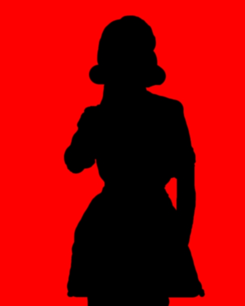
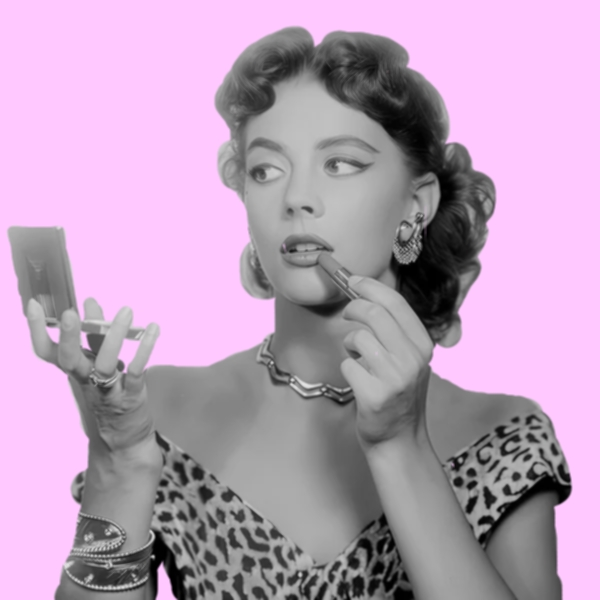

Title:PERFECT MASK
 Description: This assignment was to understand how to mask images over and through it.
Technical notes:Krita program
Process documentation:Still was on krita but I had no real issues this time it was more or less the same process but I had a good time.
Reflection:Had a pretty good time I would say this was a turning point of not having any real issues and just took a minute. I believe still looking at it I was pretty satsified and what I was trying to make made sense so overall positive about what came out of it. I learned how to make an edit like this where it is seen in things like magazine or website edits to emphasize certain buzzwords or the topic of is being shown.
MAIN PAGE PIXELATED BAD PHOTOSHOP ANIMATED GIF GLITCH AND GRIT SELF PORTRAIT TOKENS